Explore Montreal
A Brief History
Montreal grew from the French fur-trading post of Ville-Marie at the confluence of the St Lawrence and Ottawa rivers into Canada's largest city before Toronto overtook it. Stone warehouses, Notre-Dame Basilica, and Mount Royal park record French Catholic institutions, British rule after 1763, and modern Québécois nationalism. Municipal archives, parish records, and surviving architecture help explain how the city connected to wider regional trade routes, court patronage, and modern civic rebuilding after industrial and wartime change.
Attractions Map
Top Sights & Activities
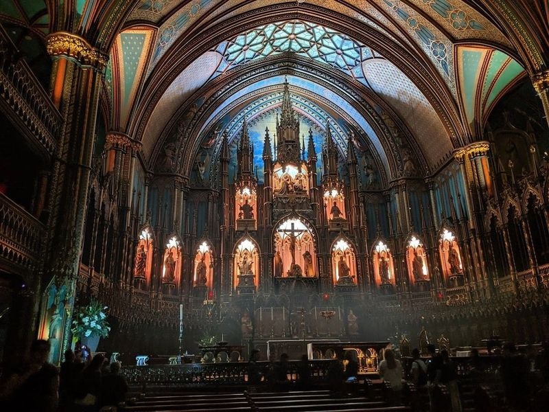
Notre-Dame Basilica of Montreal
Notre-Dame Basilica of Montreal, dating back to 1824, is a magnificent church renowned for its vibrant stained glass and as a venue for concert performances. The neo-Gothic interiors have been transformed into a 21st-century digital spectacle through the Aura show by Moment Factory. This multimedia studio has projected colorful rays and images onto the arches, columns, altar, and vaulted ceiling, creating an awe-inspiring experience.
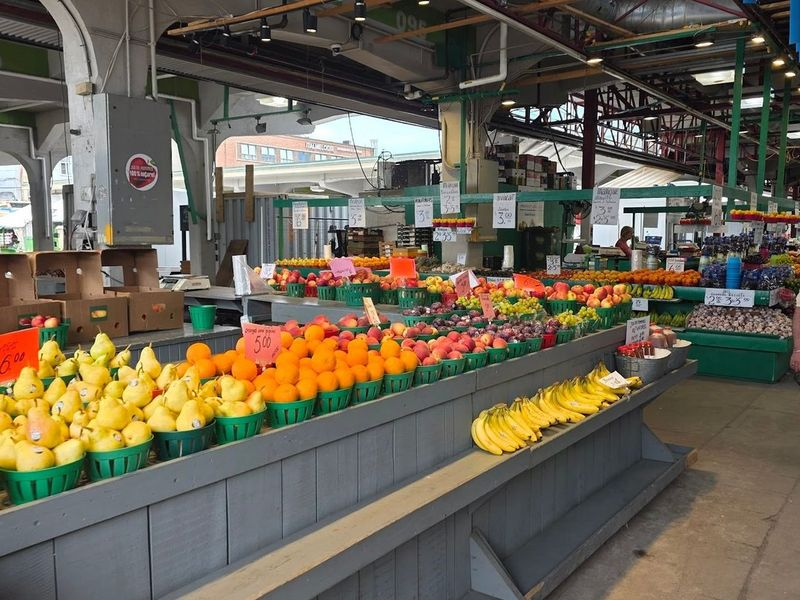
Jean Talon Market
Jean Talon Market is a must-visit culinary paradise located in the Villeray neighborhood. It is open-air markets in North America, offering a wide variety of products such as produce, meats, cheeses, fish, and baked goods. The market features year-round stores including a gigantic cheese store, a meat shop, and a place to get Quebecoise beer and preserves.
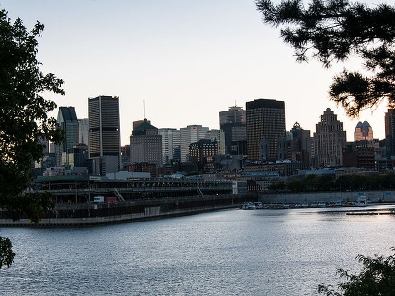
Vieux-Port de Montréal
A historic port offering beautiful waterfront views, street performers, and various activities like boat tours and the Montreal Science Centre. The site forms part of Vieux-Port de Montréal's documented civic and cultural landscape within Montreal, with archives and visitor information available from municipal or regional heritage authorities.
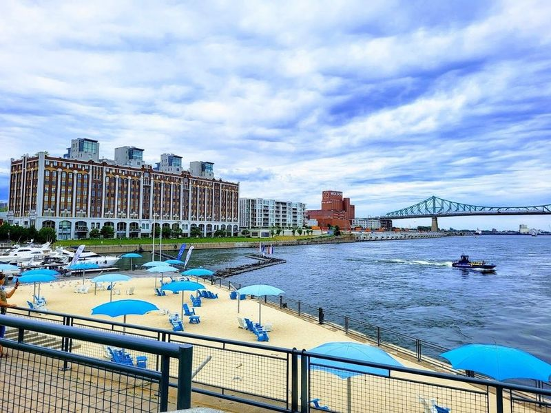
Clock Tower
The Clock Tower, constructed between 1919-1922, serves as a poignant memorial to sailors lost at sea. Situated at the entrance of the historic Old Port along the St-Lawrence River, this landmark offers a range of activities such as cycling paths, an urban beach, and even Segway rentals. Visitors can also enjoy festivals held here throughout the year. The tower's 192 steps lead to views of the city and river from its 45-meter height.
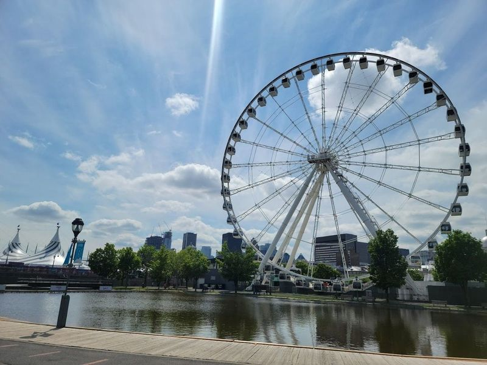
La Grande Roue de Montréal
Located in the heart of Old Port, La Grande Roue de Montreal is a modern engineering marvel that offers 360° views of Montreal and the St. Lawrence River from its towering height of 60 meters. As the tallest Ferris wheel in Canada, it illuminates the night sky with vibrant colors, creating a spectacle against the evening backdrop.
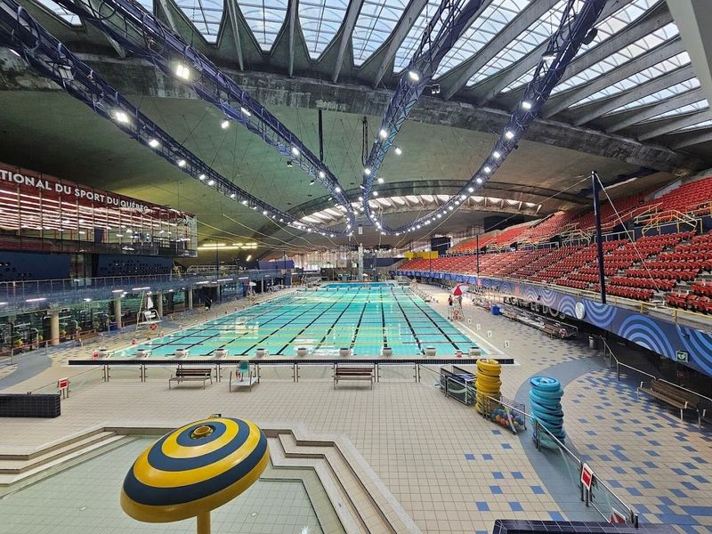
Montreal Olympic Park
Montreal Olympic Park, located in Parc Maisonneuve on the eastern side of the city, is a significant part of the Olympic Village built for the 1976 Olympic Games. The park's main attraction is the Stade Olympique, also known as 'The Big Owe', with a capacity of 80,000. Additionally, it includes other attractions such as the Biodome, Insectarium, Botanical Gardens, an observatory and cable car rides.
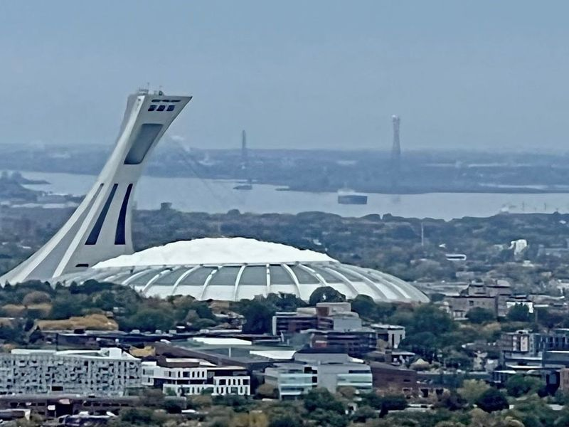
Olympic Stadium
Olympic Stadium, also known as "The Big O," is a multi-purpose stadium in Montreal that was originally built for the 1976 Summer Olympics. Designed by French architect Roger Taillibert, it features a towering inclined tower, making it one of the world's tallest leaning towers. This landmark is celebrated for its innovative architecture and serves as a symbol of Montreal's ambitions and creative prowess.
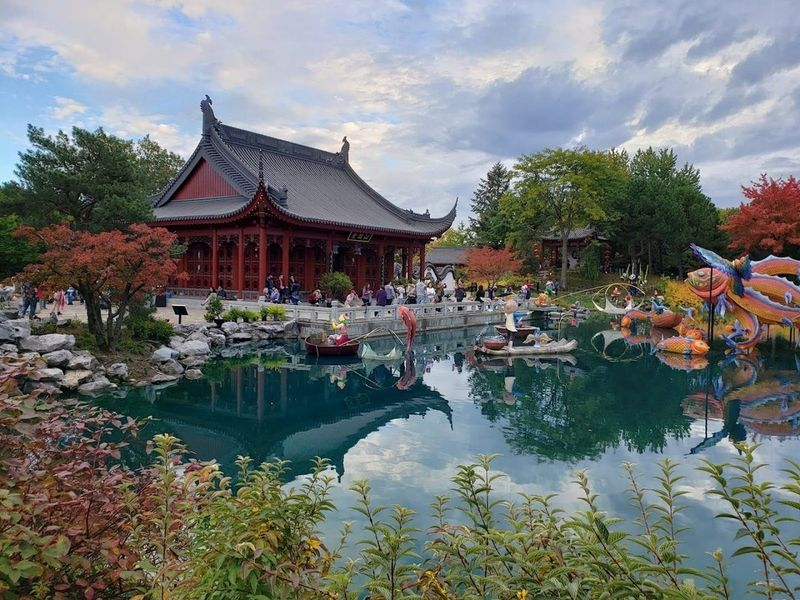
Jardin botanique de Montréal
Montreal Botanical Garden is a significant landmark and tourist attraction in Montreal, covering approximately 75 hectares. It is botanical gardens globally and was designated as a national historical site in Canada in 2008. The garden features various themed areas such as the Alpine Park, Japanese Garden, Chinese Garden, and First Nations Park. With over 22,000 plant and animal species, it draws hundreds of thousands of visitors annually.
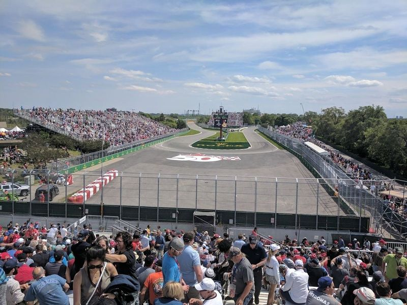
Circuit Gilles Villeneuve
The Circuit Gilles Villeneuve is a Michelin-rated racing circuit in Montreal, Quebec, Canada. It is used for the Canadian F1 & NASCAR races, as well as cycling and rollerblading paths. The track has sharp turns and a tricky chicane called The Wall located before the finish line. Most people are not allowed to go fast on the track due to Formula One racing regulations. However, enjoy riding bikes around it or watching F1 races on television.
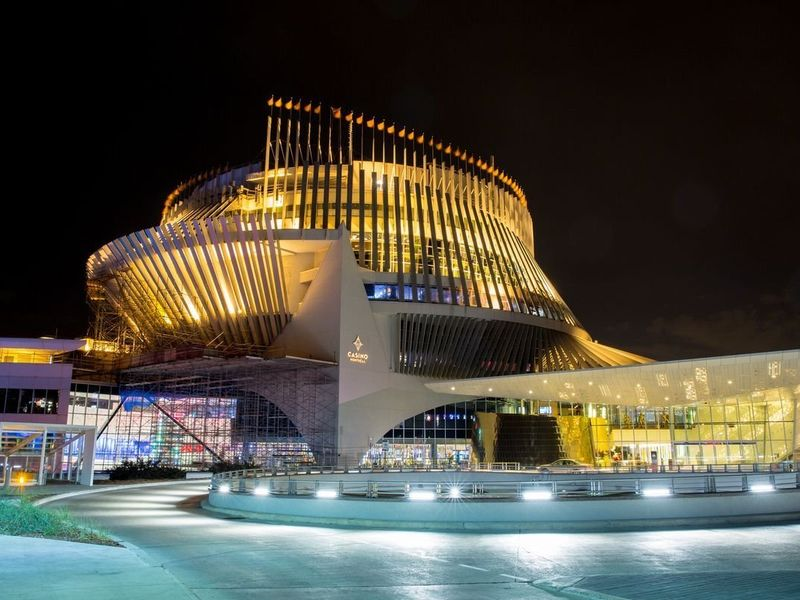
Casino de Montréal
Located on Notre Dame Island, Casino de Montréal is a contemporary gambling complex with river views and a rich history. Originally built as the French Pavilion for Expo 67, the building's architecture pays homage to the naval heritage of the St. Lawrence River. Today, it offers an electrifying atmosphere with its grandeur and elegance, making it a popular spot for events like weddings and photography sessions.
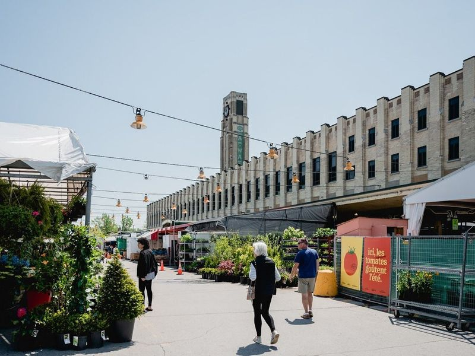
Marché Atwater
Marchés Atwater, also known as Atwater Market, is a must-visit in the southwest neighborhood of Saint-Henri. This market hall offers a wide array of gourmet products including olive oils, balsamic vinegars, spices, dried fruits, fresh herbs, spiced nuts and fine chocolates. The eastern entrance boasts a beautiful display of flowers for sale. Les Douceurs du Marche is the place to go for top-quality olive oils and an extensive selection of bitters.
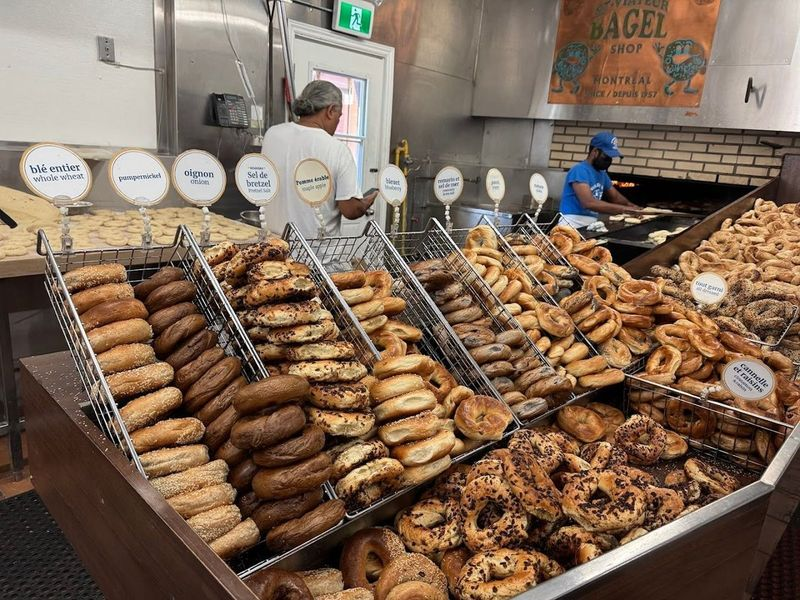
St-Viateur Bagel
St-Viateur Bagel is an storefront famous for its wood-oven baked bagels that come in various flavors and toppings. Located near Le Theatre Rialto, it's part of a mini foodie tour in the area, along with other favorite spots like Lesters Deli and Bernie Beigne. The debate between St. Viateur and Fairmount bagels is ongoing, but many argue that Montreal bagels are objectively better than those from anywhere else.
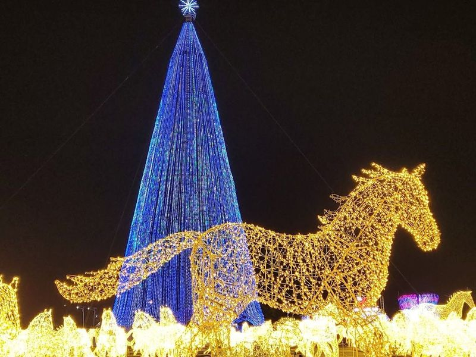
illumi Laval
Experience the enchanting world of illumi Laval, the largest multimedia journey in the world that will captivate both children and adults. Explore thousands of larger-than-life light structures and immerse yourself in various themes like dogs and cats, accompanied by their adorable noises. The park offers a drive-in option for a convenient visit. Marvel at mesmerizing light displays featuring horses, dinosaurs, and a giant tree.
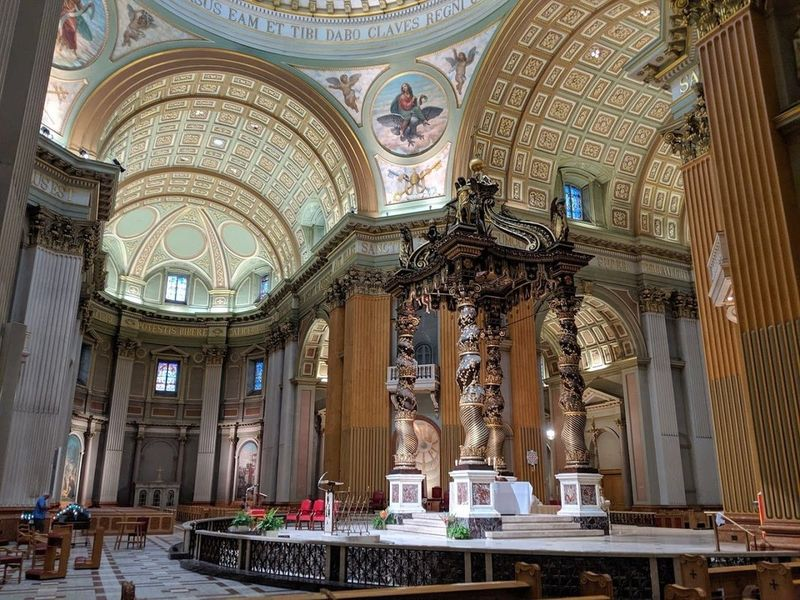
Mary, Queen of the World Cathedral
Nestled in the vibrant heart of Montreal, Quebec, the Mary, Queen of the World Cathedral is a testament to 19th-century architecture and Catholic heritage. Modeled after St. Peter's Basilica in Rome, this grand cathedral showcases a neoclassical design that reflects its religious significance while steering clear of Gothic Revival styles associated with Protestantism.
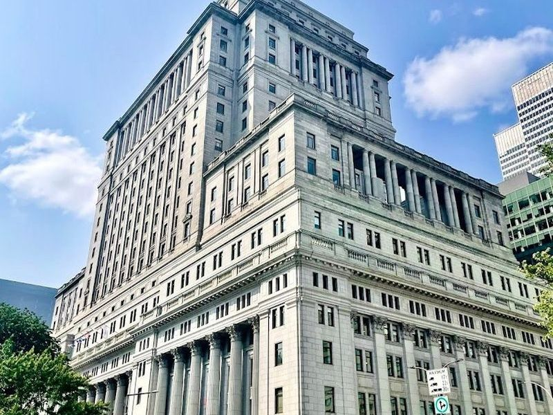
Sun Life Building
Located on Rue Peel, the Sun Life Building is a historic 24-story office building in Montreal. It offers a great photo opportunity with views of Mary, Queen of the World Cathedral and the city's tallest skyscraper. Built in 1913 and expanded in 1931, it has a rich history and impressive architecture. The interior features professional staff, services for non-native employees, and an Italian cafe called Peroni on the ground floor.
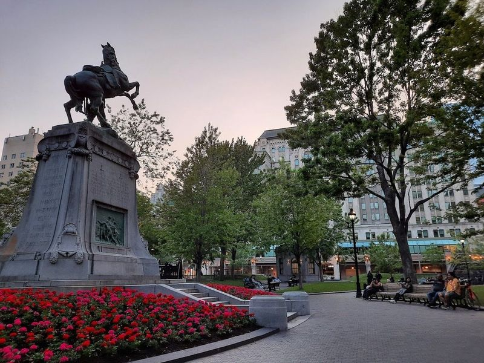
Dorchester Square
Nestled in the heart of downtown Montreal, Dorchester Square is a sprawling 5-acre green oasis that dates back to the late 1800s. This beautifully restored park, formerly known as Dominion Square, boasts an array of statues and monuments that tell tales of history and culture. Visitors can admire the striking Sir Wilfrid Laurier and Robert Burns statues, along with the unique Boer War Memorial—the only equestrian statue in the city.
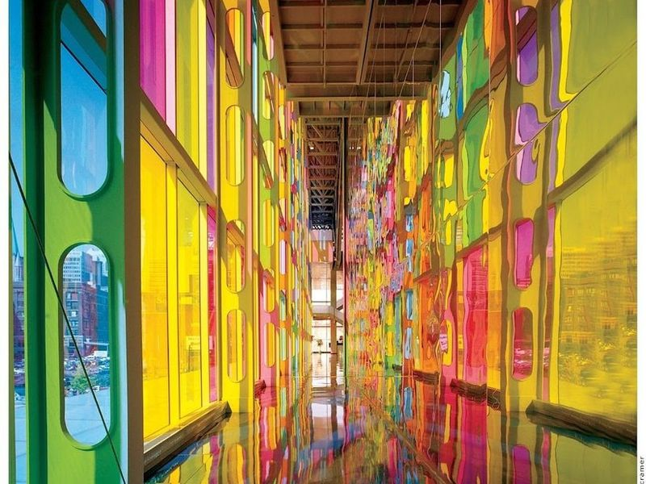
Montreal Convention Centre
The Montreal Convention Centre, also known as the Palais de Congres, may not be a typical tourist attraction, but it's definitely worth a visit. The building's modern design from the 1980s is adorned with colorful glass panels that create a visual effect during the day and an enchanting glow at night. Situated in the lively Quartier International de Montreal, this architectural marvel has been praised for its urban spectacle by civic leader Phyllis Lambert.
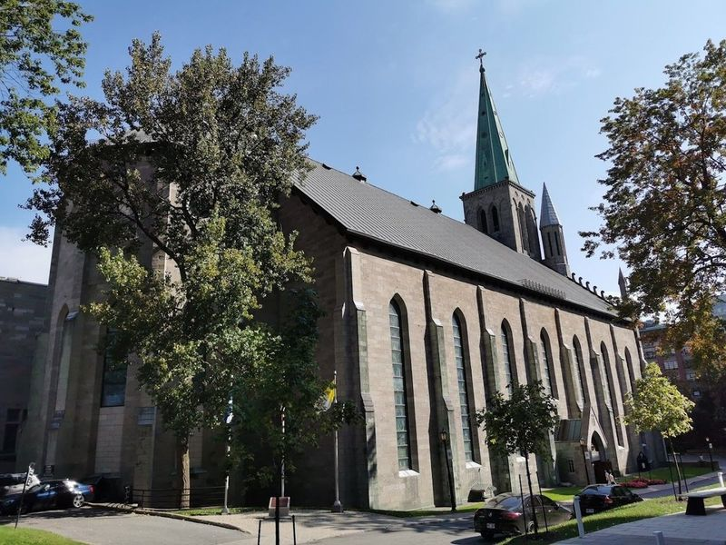
Saint Patrick's Basilica
Saint Patrick's Basilica, a Neo-Gothic Roman Catholic church, is a example of Gothic Revival architecture in Canada. Built in 1847, it features a high-vaulted ceiling adorned with green and gold mosaics. The interior boasts tall columns made to resemble marble but are actually pine logs lashed together. This basilica is considered the mother church for Montreal's Anglophone Catholics and is revered as a monument to faith and courage.
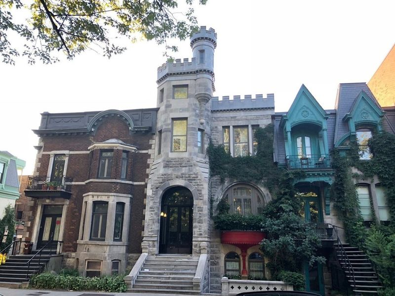
Square Saint-Louis
Square Saint-Louis is a charming public square located in The Plateau, Montreal. It features a large fountain and is surrounded by Victorian-style rowhouses, including the purple, red, blue, and teal-trimmed homes that are popular on social media. The area is known for its trendy cafes, restaurants, and stores. Visitors can enjoy leisurely strolls through the park, especially during the fall when the trees display vibrant reds and golds.
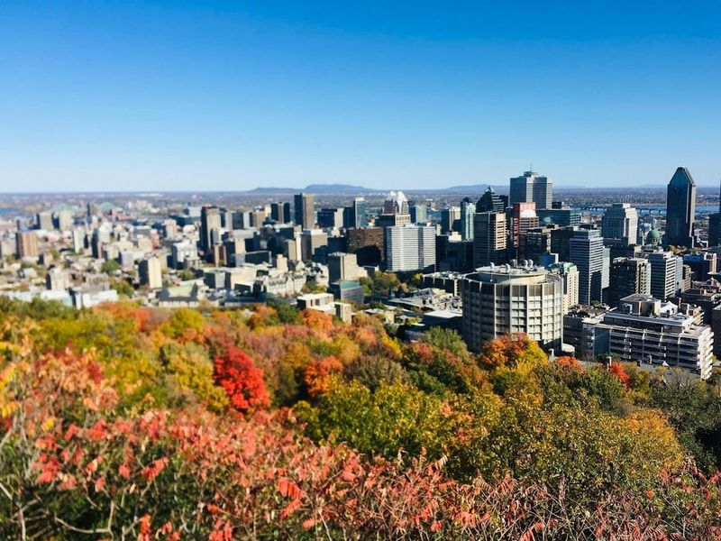
Kondiaronk Belvedere
Perched atop Mount Royal, Kondiaronk Belvedere is a spacious terrace offering views of Montreal's cityscape and the Saint Lawrence River. Accessible via staircase or trail, this lookout provides an ideal vantage point for capturing photographs and admiring the urban beauty from above.
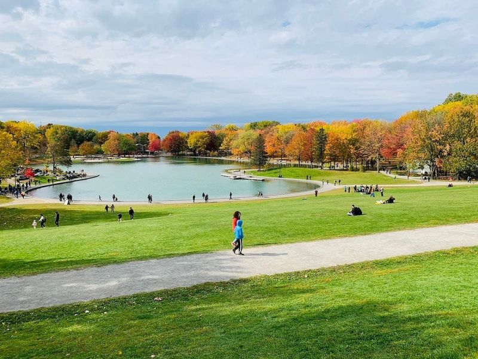
Mount Royal
Mount Royal is a landmark mountain in the city, featuring a park and year-round lookout at its peak that offers sweeping views of the surrounding area. The 692-acre central green space was designed by Frederick Law Olmsted, known for his work on New York's Central Park. Locals enjoy picnics, boat rides on the lake, and leisurely strolls with their dogs to reach the pinnacle of this 764ft-high mountain.
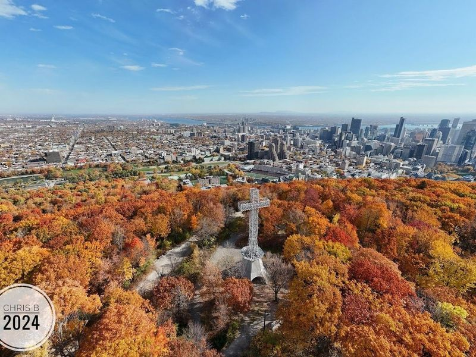
Mount Royal Cross
The Mount Royal Cross, a 103-foot-tall steel crucifix illuminated with LED lights, is an symbol located on the eastern slope of Mont-Royal in Montreal. Originally erected in 1924 to replace a wooden cross from 1643, it offers a vantage point and is visible from various parts of the city. The cross holds significant historical and cultural value for Montreal and provides panoramic views of the city.
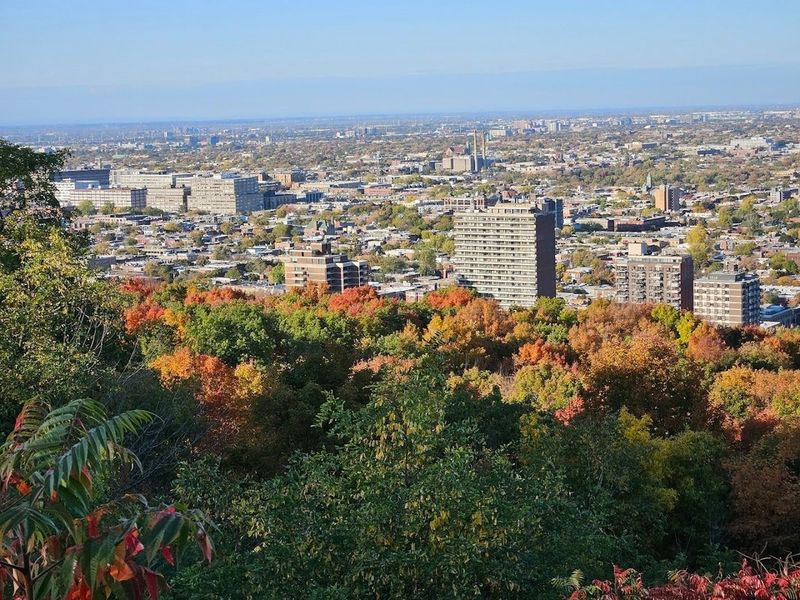
Camillien-Houde belvedere
Nestled atop Mont Royal, the Camilien-Houde Belvedere is a must-visit lookout that offers panoramic views of Montreal and its vibrant surroundings. Accessible via scenic wooded paths, this spot is perfect for picnics or simply soaking in the beauty of nature. If you're exploring the park, consider making your way to this viewpoint first; it's conveniently located near the Plateau area.
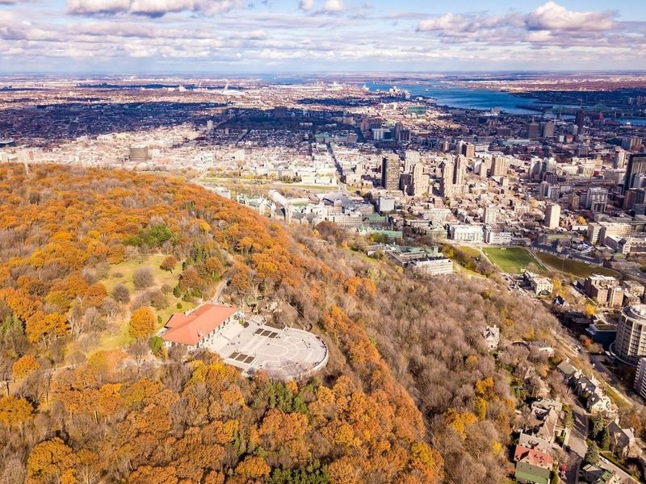
Mount Royal Park
Mount Royal Park is a vast green space that offers a variety of attractions. It features scenic trails, a picturesque lake with boat rentals, and panoramic views of the city. The park spans 185 acres and is larger than the Montreal Botanical Garden, housing an impressive collection of over 22,000 plant species and cultivars organized into thematic gardens and exhibition greenhouses.
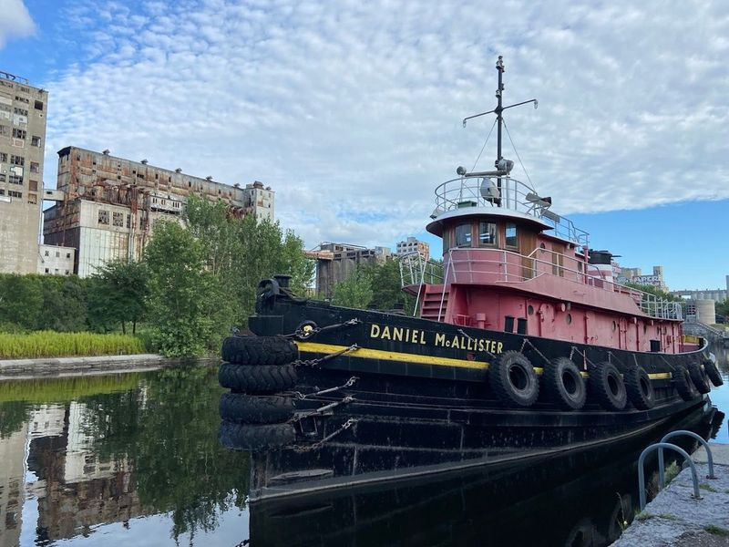
Lachine Canal National Historic Site
Lachine Canal National Historic Site is a picturesque waterfront park located in Lachine, Montreal. The site holds historical significance dating back to the 17th century when pioneers sought a route to China. The 14.4-kilometer canal was constructed in 1825 as a passage around the Lachine Rapids and now serves as a charming park with green spaces and biking trails. Visitors can immerse themselves in the area's history while enjoying the scenic views of the canal and lush surroundings.
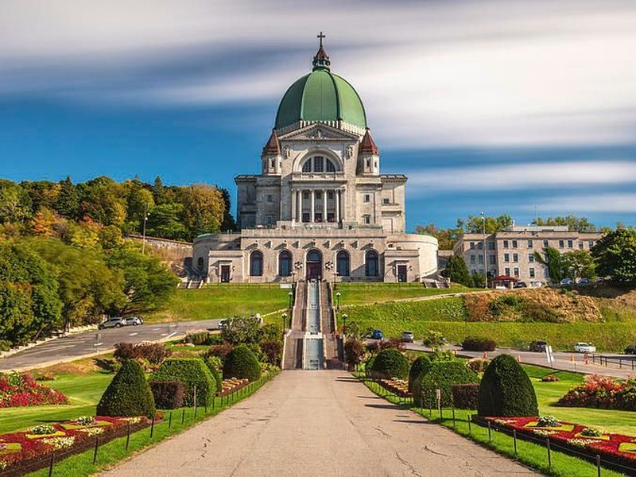
Saint Joseph's Oratory of Mount Royal
Saint Joseph's Oratory of Mount Royal is a grand Catholic church located on the south side of Montreal's namesake mountain. It features a magnificent dome, an art museum, beautiful gardens, and organ concerts. The basilica has a rich history dating back to 1904 when a small chapel was built by Andre Bessette, known for his miracle cures attributed to Saint Joseph.
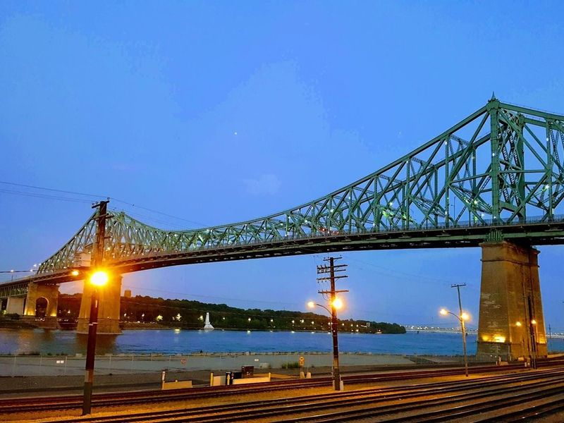
Village au Pied-du-Courant
The park parc du Pied-du-Courant offers a great place to hang out with friends, with a beautiful view of the Jacques Cartier Bridge Saint Laurent River. There are numerous food trucks available, and an artisanal market on Sundays. The onsite bar is popular among locals and visitors alike.
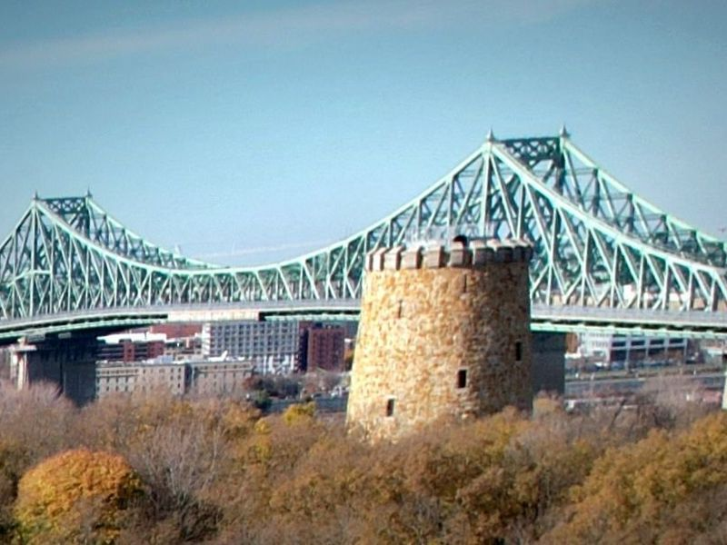
Jacques Cartier Bridge
The Jacques Cartier bridge connects Montreal to the South Shore and has views of the city. It is one of the busiest bridges in Canada with over 35 million vehicle crossings annually. The site forms part of Jacques Cartier Bridge's documented civic and cultural landscape within Montreal, with archives and visitor information available from municipal or regional heritage authorities.
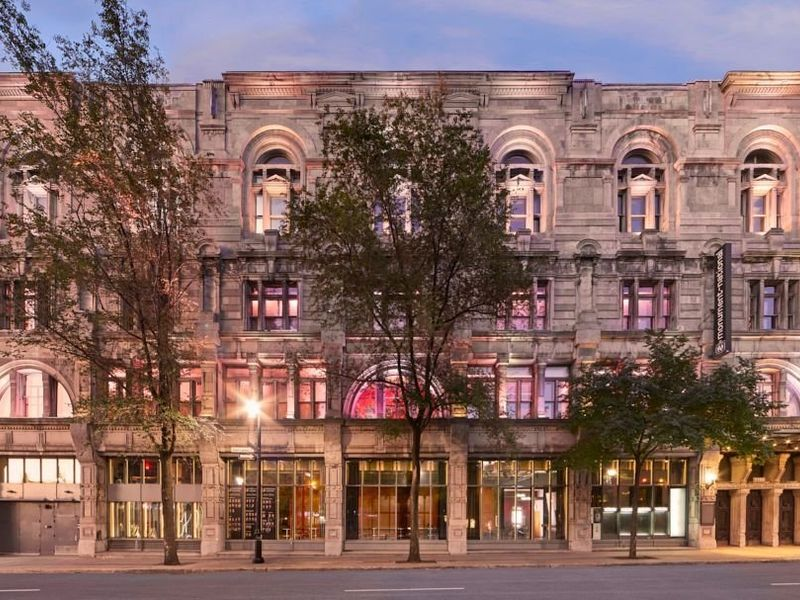
Monument-National
Located in the heart of Montreal's historic Jewish Quarter, Monument-National is a renowned 1893 Neo-Renaissance venue for performing arts and home to the National Theatre School of Canada. The building exudes historic charm with a modern interior and hosts various performances, including jazz shows and student productions.
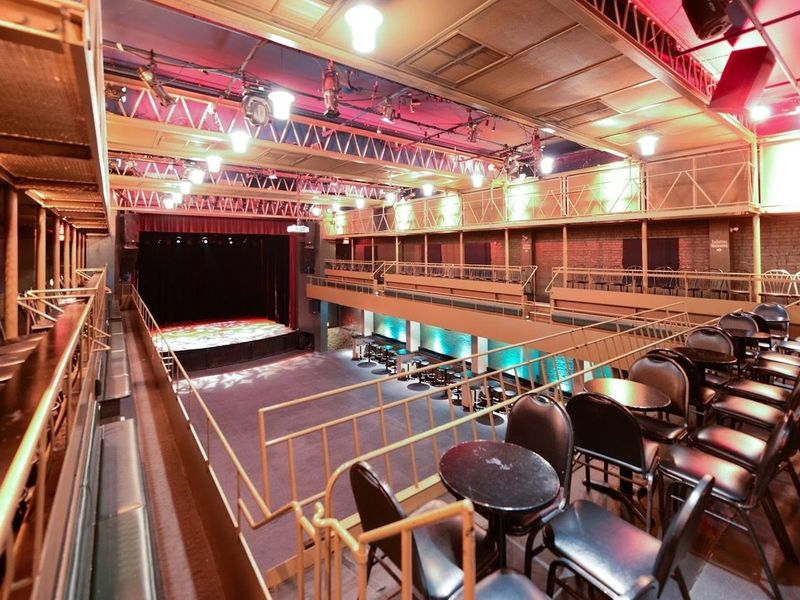
Club Soda
Club Soda is a long-standing entertainment venue in Montreal, offering live performances ranging from hip-hop to jazz to comedy in an intimate setting. It has been a pivotal part of Quebec's entertainment scene for 35 years and provides a platform for young musicians and artists to establish themselves. The venue is multifunctional, accommodating various events from Christmas celebrations to international artist showcases.
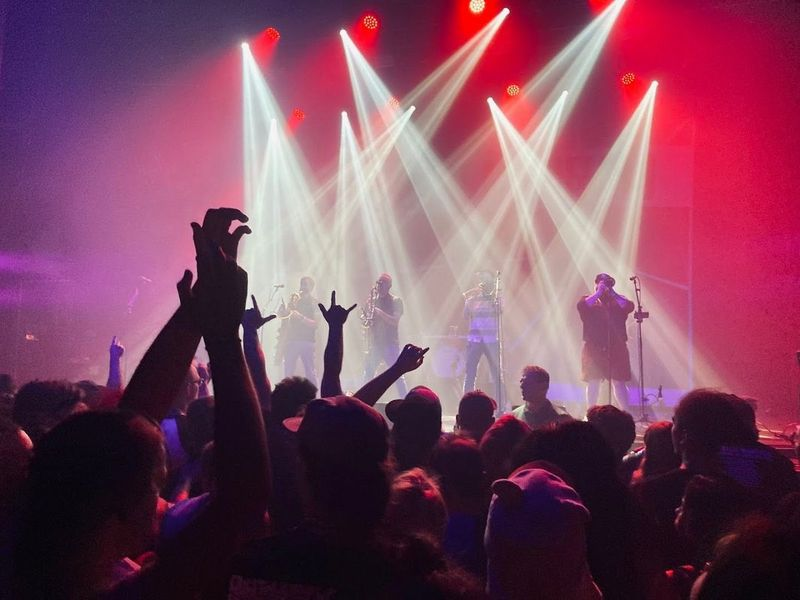
MTELUS
Mtelus is a music and entertainment venue located in downtown Montreal. It can be transformed into a concert hall, a discotheque, or a fancy reception hall. Mtelus has hosted popular artists and bands such as David Bowie, Coldplay, and Green Day. The site forms part of MTELUS's documented civic and cultural landscape within Montreal, with archives and visitor information available from municipal or regional heritage authorities.
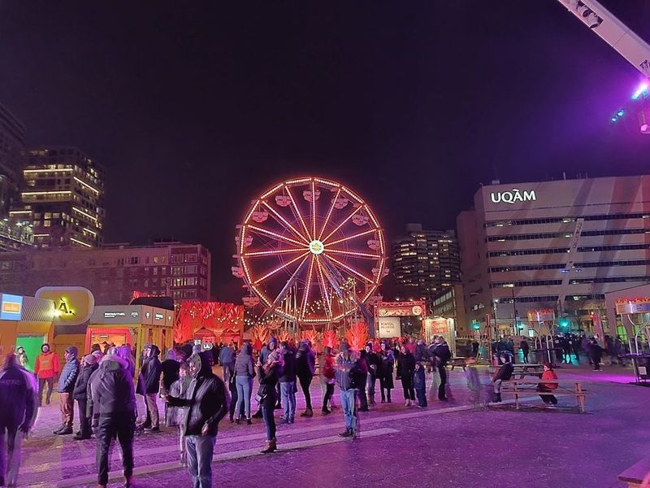
Place des Festivals
Place des Festivals, located in the Quartier des spectacles on Sainte-Catherine Street in Montreal, is an outdoor plaza known for its interactive 235-jet fountain that hosts various concerts and festivals. It is a major cultural hub of the city throughout the year, featuring events like Just for Laughs and the International Jazz Festival. The area also provides access to theaters, the Montreal Symphony House, national library, museums, and more.
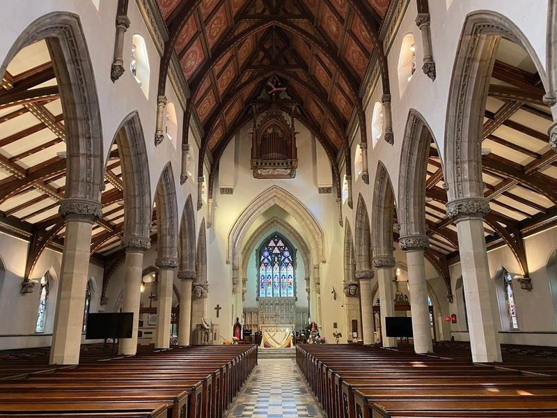
Christ Church Cathedral
Christ Church Cathedral, a 19th-century Neo-Gothic architectural marvel, boasts a 2,778-pipe organ. The cathedral prides itself on being an inclusive and diverse community that values the spiritual contributions of individuals from various backgrounds. It emphasizes equal ministry for both men and women and encourages a deep connection with God through prayer, worship, music, and study.
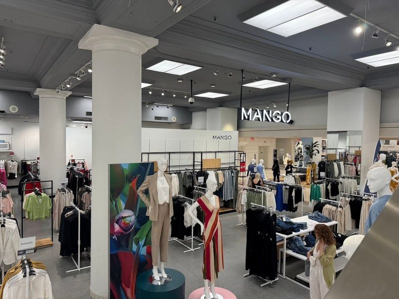
Hudson's Bay
Hudson's Bay, a storied Canadian institution established in 1670, has evolved from its roots in the fur trade to become one of Canada's largest department store chains by the early 20th century. Nestled within an impressive Neo-Romanesque redbrick structure built in 1891, this retail haven spans seven floors filled with a diverse array of offerings. Shoppers can find everything from stylish clothing and footwear for any occasion to an enticing selection of perfumes, jewelry, and electronics.
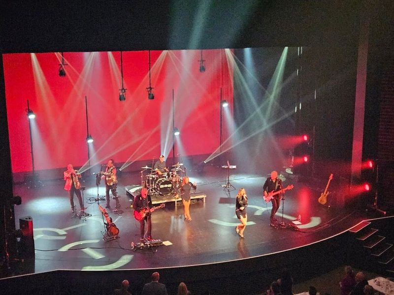
Théâtre Manuvie
Théâtre Manuvie is a grand and spacious venue that hosts a variety of performing arts events, such as comedy shows and concerts. Visitors have praised the venue for its well-organized shows, punctual start times, and excellent acoustics. The theater offers ample free underground parking and comfortable seating with clear views of the stage from any location. Guests have also commended the attentive staff and high-quality sound system at this convenient location in DIX30.